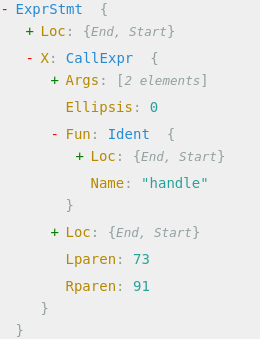

Continuing the recent theme of blog posts about Go tooling, this post will briefly discuss how analysis tools interact with one of Go's newest features - generics. As usual, this post provides a motivating example and discusses a couple of approaches to writing a tool. The full code is on GitHub.
As a motivating example, let's find all calls to generic functions in a module, and the instantiated type arguments for that call. We'll use this code sample:
package main
import "golang.org/x/exp/slices"
func foo() {
var fs []float64
newfs := slices.Clone(fs)
handle(newfs, len(newfs))
}
func bar() {
var fs []string
handle[string, int](fs, 10)
}
func main() {
foo()
bar()
}
func handle[T any, N ~int](k []T, n N) {
}
Note that there are several different calls to generic functions here:
- A call to slices.Clone in foo that uses type inference.
- A call to handle in foo that uses type inference.
- A call to handle in bar that uses explicit type instantiation.
First attempt: use types.Info.Instances directly
When rummaging through the documentation of the go/types package, one encounters some new fields added to the Info structure; in particular, the Instances field:
// Instances maps identifiers denoting generic types or functions to their
// type arguments and instantiated type.
//
// For example, Instances will map the identifier for 'T' in the type
// instantiation T[int, string] to the type arguments [int, string] and
// resulting instantiated *Named type. Given a generic function
// func F[A any](A), Instances will map the identifier for 'F' in the call
// expression F(int(1)) to the inferred type arguments [int], and resulting
// instantiated *Signature.
//
// Invariant: Instantiating Uses[id].Type() with Instances[id].TypeArgs
// results in an equivalent of Instances[id].Type.
Instances map[*ast.Ident]Instance
This seems super useful for our task! However, on a closer look, some challenges become apparent. Note that the key of this map is an *ast.Ident, which points to the identifier representing the call in the AST. For the call to handle in foo, the AST looks as follows:
Note that the Ident node is a child of the CallExpr node. Given the identifier, how do we find the actual call (since we want the arguments)?
This turns out to be non-trivial! Take a look at my previous post on the subject of Parent links in Go ASTs for details; none of the techniques described there is perfect for our needs here:
- Keeping manual track of parents or using Inspector.WithStack won't help because we're not actually traversing the AST. We have immediate access to the *ast.Ident for generic calls.
- astutil.PathEnclosingInterval is quite promising but awkward to use in this case, mostly because it requires a root *ast.File which we don't necessarily have. It also takes positions as inputs and does the AST traversal itself so using it feels somewhat backwards here.
Running into all this trouble, a reasonable conclusion is that this field was not designed to be used in this particular way.
Second attempt: traverse the AST and use Instances for lookups
Let's put shortcuts aside and try to approach it in the usual tool-writing way: we'll traverse the AST and examine the type information where necessary. I won't paste the usual tool scaffolding (read about it here); we start with the place where we have a *packages.Package in hand:
func processPackage(pkg *packages.Package) {
if len(pkg.Errors) > 0 {
for _, e := range pkg.Errors {
fmt.Printf("Error: %s\n", e)
}
os.Exit(1)
}
walkAstAndJoinInstances(pkg)
}
The overall approach is: recursively walk the AST with Inspect, and when we encounter a call expression examine the call target, checking it against the Instances field. There are some complications here to be aware of, though. The Fun field of ast.CallExpr is not necessarily an identifier. It can be a SelectorExpr for qualified calls like slices.Clone; it can also be an IndexListExpr for calls that have explicit type parameters like the second call to handle in our sample.
So our AST analysis has to aware of these options, and we end up with something like:
func walkAstAndJoinInstances(pkg *packages.Package) {
for _, fileAst := range pkg.Syntax {
ast.Inspect(fileAst, func(n ast.Node) bool {
if cexpr, ok := n.(*ast.CallExpr); ok {
var id *ast.Ident
switch fn := cexpr.Fun.(type) {
case *ast.Ident:
id = fn
case *ast.SelectorExpr:
id = fn.Sel
case *ast.IndexListExpr:
if sel, ok := fn.X.(*ast.SelectorExpr); ok {
id = sel.Sel
} else {
id = fn.X.(*ast.Ident)
}
}
if id != nil {
if v, ok := pkg.TypesInfo.Instances[id]; ok {
fmt.Println("call", id)
fmt.Printf(" instantiation type=%v args=%v\n", v.Type, getListOfTypes(v.TypeArgs))
}
}
}
return true
})
}
}
The getListOfTypes function is a utility to extract a slice of types from types.TypeList:
func getListOfTypes(tl *types.TypeList) []types.Type {
var sl []types.Type
for i := 0; i < tl.Len(); i++ {
sl = append(sl, tl.At(i))
}
return sl
}
If we run our tool on the code sample, we get:
$ go run find-generic-calls.go -- samplemodules/use-generics/
call Clone
instantiation type=func(s []float64) []float64 args=[[]float64 float64]
call handle
instantiation type=func(k []float64, n int) args=[float64 int]
call handle
instantiation type=func(k []string, n int) args=[string int]
Mission accomplished! We've been able to identify calls to generic functions, both with and without type inference, and to access their arguments.
A taste for more
While the tool developed in this post is very basic, hopefully it provides a gentle introduction to writing tools with generic code in mind. For a much more detailed discussion, I strongly recommend going over the guide at https://github.com/golang/exp/tree/master/typeparams/example; if you plan to write more sophisticated analyzers that work on generic code, it will prove invaluable.